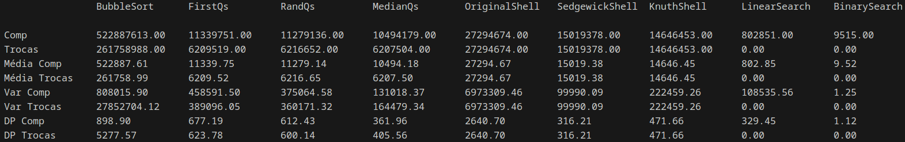
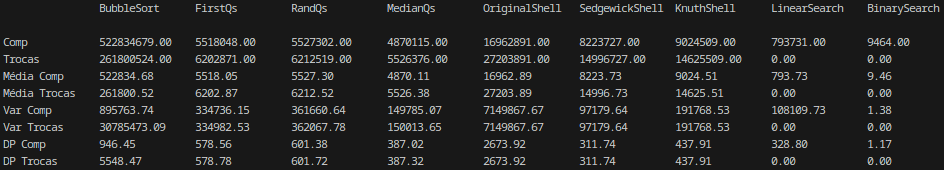
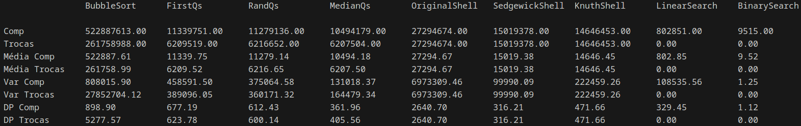
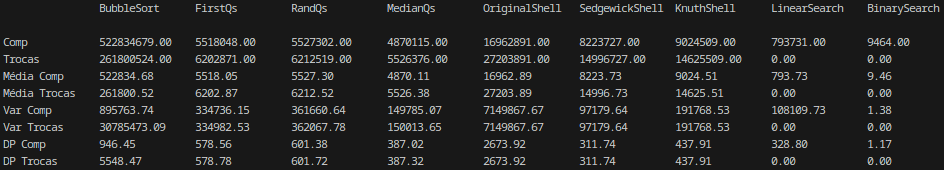

 

Eduardo Kaluf (GRR: 20241770)
Bacharelado em ciência da computação
Paraná, Curitiba
20/11/2024
Antes de colocar a mão na massa e simplesmente sair escrevendo código, é muito importante decidir a fundação do projeto em que se está trabalhando, neste caso, a base desse trabalho prático, será decisão das estratégias e algoritmos que serão utilizados.
Não só a decisão é de suma importância, como também a motivação por trás de tais escolhas. Cada ação irá impactar na análise que faremos no futuro, sendo assim, para uma comparação justa, que faça sentido e que realmente prove algo sobre a complexidade desses algoritmos, devemos tomar escolhas que façam sentido.
Por exemplo, qual o ponto de comparar o QuickSort com o ShellSort, se no primeiro dos casos escolhermos sempre um pivo que tenta colocar o máximo de elementos de um lado só, tornando o algoritmo lento (quase quadrático!), enquanto no outro uma separação boa o suficiente que irá beneficiar a velocidade de ordenamento do InsertSort final.
É claro que essa comparação é uma extrapolação, contudo, serve para termos em mente do quão importante é esse primeiro passo, a fim de nosso resultado ser suficientemente satisfatório, podendo afirmar o quanto o primeiro é melhor que o segundo, ou vice-versa.
Tendo em mente uma escolha justa a fim de comparar ambos algoritmos, é necessário levar em conta outros pontos também:
• Qual é a relação desses algoritmos com os demais?
• O espaço amostral é suficientemente grande e aleatório?
Respondendo a essas questões, não só é importante a comparação entre esses dois principais algoritmos, como um terceiro, a fim de deixar evidente a diferença entre o que seriam os melhores algoritmos de ordenação que conhecemos na atualidade, com os outros, extremamente importantes, porém já provados não tão eficientes assim.
Ao que tange às amostras, é um problema delicado de ser solucionado, pois quando tais algoritmos são efetivamente utilizados no mundo real, os dados a serem recebidos, não são necessariamente sempre tão aleatórios assim. É necessário então, levar em conta se existe algum padrão de entrada, o que pode influenciar a efetividade do algoritmo sendo usado. Apesar disso, iremos nos limitar a ideia de que nenhum número é mais importante que o outro e testaremos exaustivamente os nossos algoritmos para vetores grandes, de tal maneira, conseguiremos uma noção ótima da eficiência de cada um deles. Noção essa, suficientemente boa para que na prática possamos afirmar qual é melhor em situações genéricas.
Por último, uma análise sobre algoritmos de pesquisa será feita também. Uma comparação entre LinearSearch e BinarySearch.
Não existe dúvida sobre a diferença de eficiência desses dois métodos, entretanto, mostrar essa diferença na prática traz aos holofotes novamente a motivação do porque é importante o algoritmo de ordenação sempre ser o mais eficiente possível, afinal de contas, a busca em vetores é utilizada exaustivamente nas mais variadas aplicações e para que tal busca seja eficiente, BinarySearch, que só pode ser utilizada em vetores ordenados, com certeza será utilizada.
Refletindo sobre o que foi dito na apresentação, agora sabemos a importância desse processo, dessa maneira, vamos partir para construir uma base sólida de análise.
A implementação de tais algoritmos ocorreu de maneira concisa e prática. O modo de como cada um foi implementado não diferenciou de como foram passados em sala de aula, buscando manter o trabalho fidedigno com o que aprendemos.
Para todo o caso, o vetor possui o espaço “[0]” reservado ao sentinela, assim até os algoritmos que não o utilizam foram adaptados para suportar esse tipo especifico de vetor.
Um menu interativo para o usuário exibe as ações que podem ser tomadas dentro do programa, dando liberdade a testar de maneira livre e arbitraria. Uma das opções é um teste grande que exibirá a média de comparações e trocas de nossos algoritmos, que será utilizada como o nosso resultado final.
Ao ser testado, o programa sempre exibirá um log do que está fazendo, deixando o usuário a par de suas ações. Além disso, um arquivo de teste em conjunto ao seu log final também estará disponível
Optei por implementar primeiro os algoritmos em si, verificando se estavam operando de maneira correta, após ter certeza de que todos funcionavam, comecei a trabalhar no menu, tentando deixar a interação fácil de entender e prática.
Depois disso, modularizei o código e o tornou mais limpo criando algumas funções utilitárias, por fim, fiz a parte de testar 1000 vezes cada algoritmos, criando as funções que calculam a estatística e o teste em si.
Após a realização de diversos testes exaustivos em vetores com diversos e variados elementos, apresento algumas tabelas.


Sendo assim, ao analisar os resultados obtidos com os testes feitos, podemos concluir que de fato o ShellSort é superior ao QuickSort, obtendo uma quantidade muito inferior de comparações. Apesar disso, o QuickSort sempre apresentou a quantidade de trocas e um desvio padrão menor em relação ao Shell.
Quanto aos métodos implementados, no QuickSort a diferença não foi muito gritante para as trocas, com todos tendo em média a mesma quantidade. Para as comparações, escolher a mediana de 3 números aleatórios do vetor se mostrou o método mais eficiente.
Para o ShellSort, podemos observar que o método do próprio Shell se mostrou muito ineficiente, porém, quando olhamos para a sequencia de Sedgewick, ela tem a quantidade de comparações mais baixa, sendo um pouco melhor do que o método de Knuth neste contexto. Contudo, para as trocas, Sedgewick foi superior. Independente de escolher o método de Sedgewick, ou a sequência de Knuth, eles sempre acabaram por dominar o QuickSort em questão de comparações.
Por fim, ao olharmos o BubbleSort, ele realizou em média 20 vezes mais comparações que o Quick e 40 vezes mais que o Shell. Já as trocas, foram 80 vezes mais que o Quick e 15 vezes mais que o Shell.
Quanto aos algoritmos de busca, como já era de se esperar, a busca binária é extremamente superior a busca sequencial, possuindo uma média de comparações 90 vezes menor.
Portanto, ao juntar todos esses dados, podemos concluir seguramente, quando tomando a quantidade de comparações como fato dominante, que o ShellSort é mais eficiente que o QuickSort.